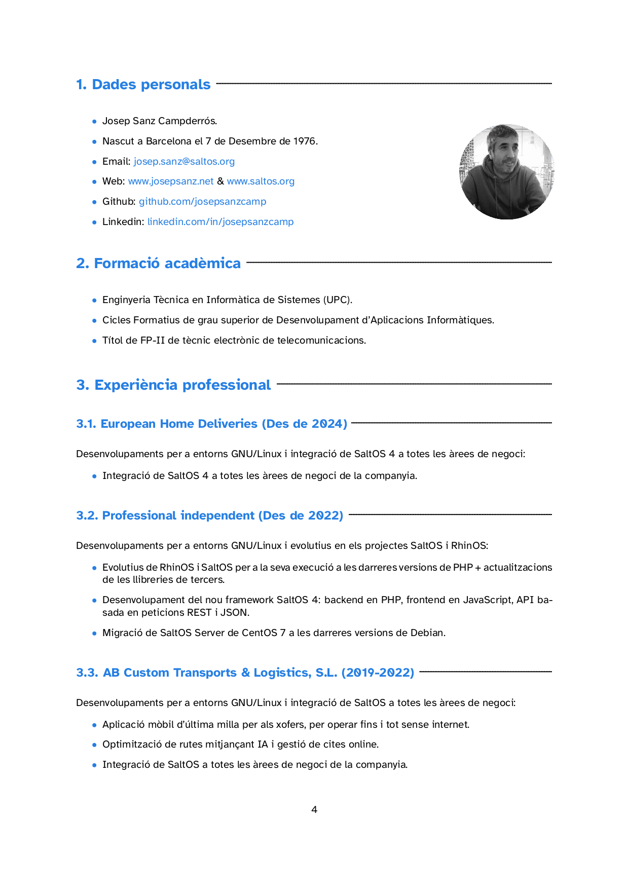
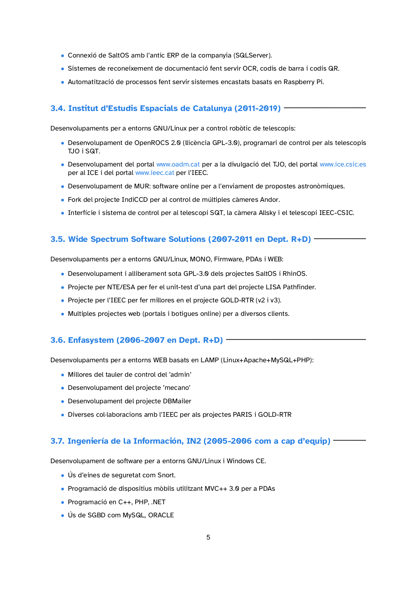
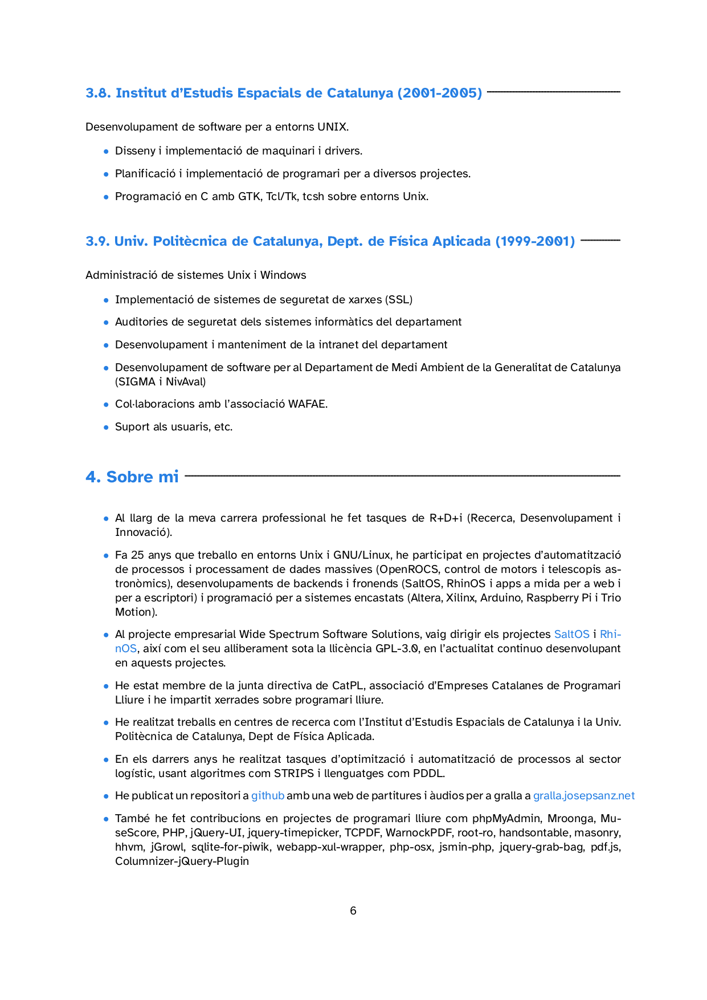
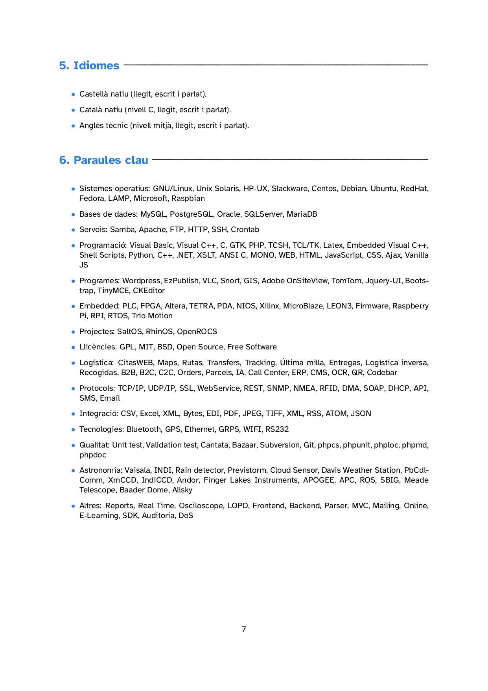

   

1. Dades personals
• Josep Sanz Campderrós.
• Nascut a Barcelona el 7 de Desembre de 1976.
• EMail: josep.sanz@saltos.org
• Web: www.josepsanz.net & www.saltos.org
• Github: github.com/josepsanzcamp
• Sourceforge: sourceforge.net/u/josepsanzcamp
• Linkedin: linkedin.com/in/josepsanzcamp
2. Formació acadèmica
• Enginyeria Tècnica en Informàtica de Sistemes (UPC).
• Cicles Formatius de grau superior de Desenvolupament d’Aplicacions Informàtiques.
• Tı́tol de FP-II de tècnic electrònic de telecomunicacions.
3. Altres cursos i seminaris
• Curs bàsic d’AutoCAD
• Permı́s de conduir B1
• Seminari de seguretat en xarxes informàtiques
• Programació en Java Distribuı̈t amb CORBA
• Seminari de FPGA s ALTERA
• Seminari d’Echelon - Lonworks
• Seminari aplicació Llei Orgànica de Protecció de Dades (LOPD).
4. Altres dades d’interès
• Al llarg de la meva carrera professional, gairebé sempre he fet tasques de R+D+i (Recerca, Desenvolu-
pament i Innovació).
• Fa 25 anys que treballo en entorns Unix i GNU/Linux, he participat en projectes d’automatització de
processos i processament de dades massives (OpenROCS, control de motors i telescopis astronòmics),
desenvolupaments de backends i fronends (SaltOS, RhinOS i apps a mida per a web i per a escriptori)
i programació per a sistemes encastats (Altera, Xilinx, Arduino i Raspberry pi).
• Al projecte empresarial Wide Spectrum Software Solutions, vaig dirigir els projectes SaltOS i RhinOS,
aixı́ com el seu alliberament sota la llicència GPL-3.0, en l’actualitat continuo desenvolupant en aquests
projectes.
4
• He estat membre de la junta directiva de CatPL, associació d’Empreses Catalanes de Programari Lliure
i he impartit xerrades sobre programari lliure.
• He realitzat treballs en centres de recerca com l’Institut d’Estudis Espacials de Catalunya i la Universitat
Politècnica de Catalunya, Dept de Fı́sica Aplicada.
• En els darrers anys he realitzat tasques d’optimització i automatització de processos al sector logı́stic,
usant algoritmes com STRIPS i llenguatges com PDDL.
• He publicat un repositori a github amb una web de partitures i àudios per a gralla a gralla.josepsanz.net
• També he fet contribucions en projectes de programari lliure com phpMyAdmin, Mroonga, MuseSco-
re, PHP, jQuery-UI, jquery-timepicker, TCPDF, WarnockPDF, root-ro, handsontable, masonry, hhvm,
jGrowl, sqlite-for-piwik, webapp-xul-wrapper, php-osx, jsmin-php, jquery-grab-bag, pdf.js, Columnizer-
jQuery-Plugin
5. Paraules clau
• Sistemes operatius: GNU/Linux, Unix Solaris, HP-UX, Slackware, Centos, Debian, Ubuntu, RedHat,
Fedora, LAMP, Microsoft, Raspbian
• Bases de dades: MySQL, PostgreSQL, Oracle, SQLServer, MariaDB
• Serveis: Samba, Apache, FTP, HTTP, SSH, Crontab
• Programació: Visual Basic, Visual C++, C, GTK, PHP, TCSH, TCL/TK, Latex, Embedded Visual
C++, Shell Scripts, Python, C++, .NET, XSLT, ANSI C, MONO, WEB, HTML, JavaScript, CSS,
Ajax, Vanilla JS
• Programes: Wordpress, EzPublish, VLC, Snort, GIS, Adobe OnSiteView, TomTom, Jquery-UI, Boots-
trap, TinyMCE, CKEditor
• Embedded: PLC, FPGA, Altera, TETRA, PDA, NIOS, Xilinx, MicroBlaze, LEON3, Firmware, Raspberry
PI, RPI, RTOS
• Projectes: SaltOS, RhinOS, OpenROCS
• Llicències: GPL, MIT, BSD, Open Source, Free Software
• Logı́stica: CitasWEB, Maps, Rutas, Transfers, Tracking, Última milla, Entregas, Logı́stica inversa,
Recogidas, B2B, B2C, C2C, Orders, Parcels, IA, Call Center, ERP, CMS, OCR, QR, Codebar
• Protocols: TCP/IP, UDP/IP, SSL, WebService, REST, SNMP, NMEA, RFID, DMA, SOAP, DHCP,
API, SMS, Email
• Integració: CSV, Excel, XML, Bytes, EDI, PDF, JPEG, TIFF, XML, RSS, ATOM, JSON
• Tecnologies: Bluetooth, GPS, Ethernet, GRPS, WIFI, RS232
• Qualitat: Unit test, Validation test, Cantata, Bazaar, Subversion, Git, phpcs, phpunit, phploc, phpmd,
phpdoc
• Astronomia: Vaisala, INDI, Rain detector, Previstorm, Cloud Sensor, Davis Weather Station, PbCdl-
Comm, XmCCD, IndiCCD, Andor, Finger Lakes Instruments, APOGEE, APC, ROS, SBIG, Meade
Telescope, Baader Dome, Allsky
• Altres: Reports, Real Time, Osciloscope, LOPD, Frontend, Backend, Parser, MVC, Mailing, Online,
E-Learning, SDK, Auditoria, DoS
5
6. Experiència professional
6.1. Professional independent (Des de 2022)
Desenvolupaments per a entorns GNU/Linux i evolutius en els projectes SaltOS i RhinOS:
• Evolutius de RhinOS i SaltOS per a la seva execució a PHP 8.2 + actualitzacions de les llibreries de
tercers.
• Desenvolupament del nou framework SaltOS v4: backend en PHP, frontend en JavaScript, API basada
en peticions REST i JSON.
• Migració de SaltOS Server de CentOS 7 a Debian 11.
6.2. AB Custom Transports & Logistics, S.L. (2019-2022)
Desenvolupaments per a entorns GNU/Linux i integració de SaltOS a totes les àrees de negoci:
• Aplicació mòbil d’última milla per als xofers, per operar fins i tot sense internet.
• Optimització de rutes mitjançant IA i gestió de cites online.
• Integració de SaltOS a totes les àrees de negoci de la companyia.
• Connexió de SaltOS amb l’antic ERP de la companyia (SQLServer).
• Sistemes de reconeixement de documentació fent servir OCR, codis de barra i codis QR.
• Automatització de processos fent servir sistemes encastats basats en Raspberry PI.
6.3. Institut d’Estudis Espacials de Catalunya (2011-2019)
Desenvolupaments per a entorns GNU/Linux per a control robòtic de telescopis:
• Desenvolupament de OpenROCS 2.0 (llicència GPL-3.0), programari de control per als telescopis TJO
i SQT.
• Desenvolupament del portal www.oadm.cat per a la divulgació del TJO, del portal www.ice.csic.es per
al ICE i del portal www.ieec.cat per l’IEEC.
• Desenvolupament de MUR: software online per a l’enviament de propostes astronòmiques.
• Fork del projecte IndiCCD per al control de múltiples càmeres Andor.
• Interfı́cie i sistema de control per al telescopi SQT, la càmera Allsky i el telescopi IEEC-CSIC.
6.4. Wide Spectrum Software Solutions (2007-2011 en Dept. R+D)
Desenvolupaments per a entorns GNU/Linux, MONO, Firmware, PDAs i WEB:
• Desenvolupament i alliberament sota GPL-3.0 dels projectes SaltOS i RhinOS.
• Projecte per NTE/ESA per fer el unit-test d’una part del projecte LISA Pathfinder.
• Projecte per l’IEEC per fer millores en el projecte GOLD-RTR (v2 i v3).
• Multiples projectes web (portals i botigues online) per a diversos clients.
6
6.5. Enfasystem (2006-2007 en Dept. R+D)
Desenvolupaments per a entorns WEB basats en LAMP (Linux+Apache+MySQL+PHP):
• Millores del tauler de control del ’admin’
• Desenvolupament del projecte ’mecano’
• Desenvolupament del projecte DBMailer
• Diverses col·laboracions amb l’IEEC per als projectes PARIS i GOLD-RTR
6.6. Ingenierı́a de la Información, IN2 (2005-2006 com a cap d’equip)
Desenvolupament de software per a entorns GNU/Linux i Windows CE.
• Ús d’eines de seguretat com Snort.
• Programació de dispositius mòbils utilitzant MVC++ 3.0 per a PDAs
• Programació en C++, PHP, .NET
• Ús de SGBD com MySQL, ORACLE
6.7. Institut d’Estudis Espacials de Catalunya (2001-2005)
Desenvolupament de software per a entorns UNIX.
• Disseny i implementació de maquinari i drivers.
• Planificació i implementació de programari per a diversos projectes.
• Programació en C amb GTK, Tcl/Tk, tcsh sobre entorns Unix.
6.8. Universitat Politècnica de Catalunya, Dept. de Fı́sica Aplicada (1999-2001)
Administració de sistemes Unix i Windows
• Implementació de sistemes de seguretat de xarxes (SSL)
• Auditories de seguretat dels sistemes informàtics del departament
• Desenvolupament i manteniment de la intranet del departament
• Desenvolupament de software per al Departament de Medi Ambient de la Generalitat de Catalunya
(SIGMA i NivAval)
• Col·laboracions amb l’associació WAFAE.
• Suport als usuaris, etc.
7
6.9. INCOSE, ingenierı́a de contrataciones y servicios (1997-1999)
Muntatge i manteniment d’equips industrials.
• Programació de PLCs per a aplicacions industrials.
• Muntatge de quadres elèctrics i sistemes de depuració de residus.
6.10. GESTHOS, gestión técnica hospitalaria (1996-1997)
Acoblament i manteniment d’equips d’electro-medicina.
• Reparació d’equips mèdics.
• Especificació i implementació d’equips per tests tècnics.
7. Idiomes
• Castellà natiu (llegit, escrit i parlat).
• Català natiu (nivell C, llegit, escrit i parlat).
• Anglès tècnic (nivell mitjà, llegit, escrit i parlat).
8